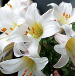
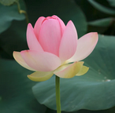
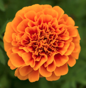
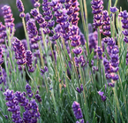
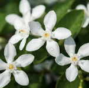

Hello World!

Rose
The queen of romance, known for its beauty and thorns.

Lily
Elegant and pure, often symbolizing peace and rebirth.

Lotus
Sacred and serene, rising beautifully from muddy waters.

Marigold
Bright and cheerful, often used in festivals and garlands.

Lavender
Soft purple blooms famous for their calming scent.

Jasmine
Delicate white flowers that smell absoutely heavenlt.
Sunflower
Big, bold and always turning to follow the sun.